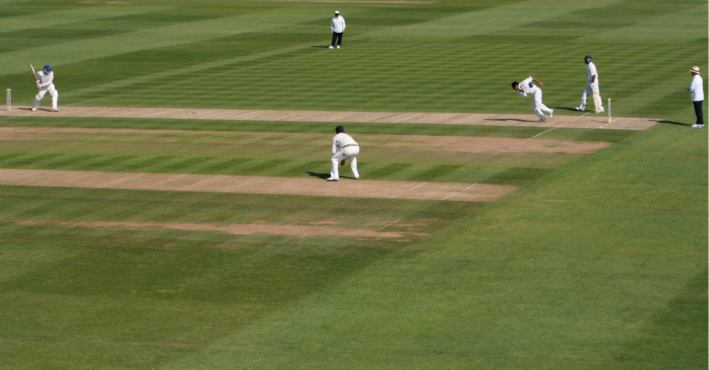
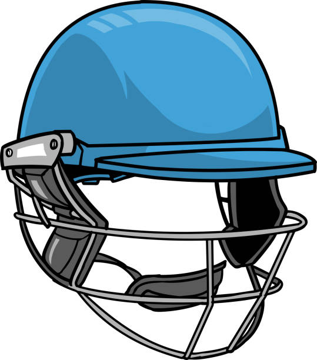
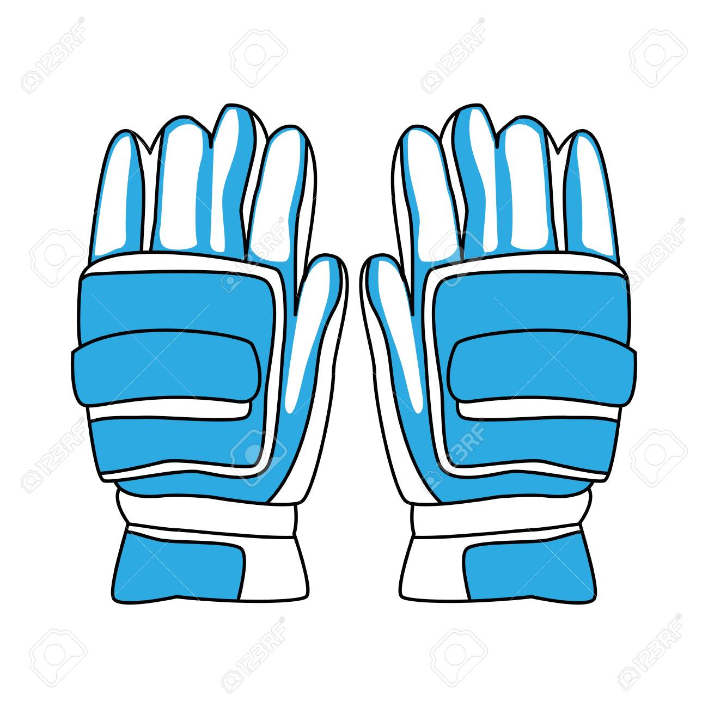

------- Cricket Equipments and Info. -------
Hi,this is the page of Cricket Equipments . Here we will show the equipments in the game of Cricket.
Cricket is a very Great game and also known as the "Gentlemen's Game".
The most popular game in India is Cricket and people who dislike cricket are very rare in India.
Not only playing , we should also gain some knowledge about the game.By doing that,we can play (or) Analyse the game even more better.



This Equipment is called Helmet . This Equipment is used to protect our head from higher balls .
Helmet is necessary in all formats of the Cricket . But , it is neglictable when spinner bowls . Because , spin bowler
can't bowl high . Materials used for making cricket helmets are impact resistance materials like ABS Plastic , Fibreglass , carbon fibre , titanium , steel and high density foam etc.
Main parts of a cricket helmets are grill (made with steel , titanium or carbon fibre) , chin strap , inner foam material , outer impact resistant shell etc.

This Equipment's name is Gloves.As you know , that these gloves are worn to hands .
Gloves are used to protect the batsman and wicket-keepers hands from impact of the ball.
Gloves are also worn by wicket-keepers , but they look and manufactured in a different manner when compared to batsaman gloves.
These Gloves are made up of a leather palm and back made of nylon or another synthetic fabric, the glove covers one or both hands of a batter, providing comfort, prevention of blisters, warmth, improved grip, and shock absorption when hitting the ball.

These are Leg Pads . These leg pads are used to prevent the legs from hitting of ball .
Actually , in a type of out called LBW (Leg-Before-Wicket) , these play a crucial role .
If ball hits this leg pads , then Third Umpire will see in ball-tracking that if ball didn't hitted the leg pad then
where it should have gone . If it hits wickets in ball-tracking , then the batsman is OUT!
Cricket batting pads are consisting of high density foam which is made from PVC and PU.
Face of the cricket pads are made from cane which is a light wooden material filled with cotton, all these materials provide high protection against cricket ball and reduce the impact of shock.
THANK YOU FOR VISITING OUR PAGE . HAVE A GREAT DAY ! :)